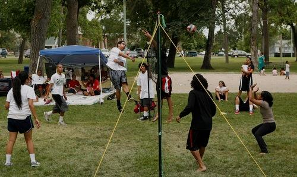
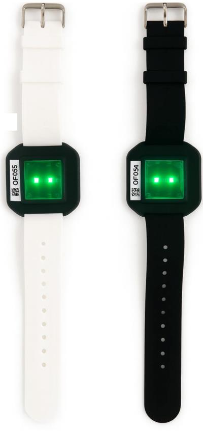
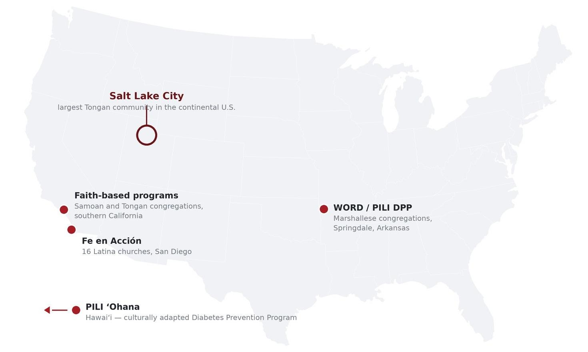

KĀINGA MĀLOHI
Developing a Physical Activity Intervention For Sedentary Tongan Adults in Salt Lake City

Making physical activity possible and encouraging people when and where they are able to be active
Mathilde Hizette Sergius
Utah Geo-Health Lab (UGHL)
Population health issue
- Physical inactivity drives obesity, type 2 diabetes and cardiovascular disease; fewer than half of NHPI adults (48.7%) meet activity guidelines.
- Tongans are invisible in the data: aggregated under “Pacific Islander,” so no Tongan-specific activity estimate exists and the causes of inactivity cannot be diagnosed.
- Utah has the highest per-capita Pacific Islander population in the continental U.S.; 39% of Utah’s Pacific Islanders are Tongan.
- Federal disaggregated reporting was mandated in 2024 (OMB), but compliance is not required until 2029.
- Community anchors already exist: churches and the National Tongan American Society (NTAS).
Why the causes cannot be diagnosed
Aggregated as
“Pacific Islander”
Tongans invisible
in the data
Causes of inactivity
unknown
No identifiable
levers for action
Sources: Adams et al., 2019; Panapasa et al., 2011; OMB, 2024; Prior, 2022.

Structural barriers
- PiPA Phase I, our current study: n = 152 Tongan adults, 92 households in Salt Lake County. The pattern is structural barriers, not personal failure.
- 79% have obesity, 40% have no car, 75% cannot afford leisure activities → yet 92% want to be more active.
- Their neighborhood walkability is pretty high (14.2 / 20) and nearly identical across participants: but it measures streets, not cost, schedule or childcare!
- Accelerometers data: an average day is sitting and driving; walking appears only in short bouts between a parked car and a destination. Leisure activity is absent.
75%
cannot afford leisure activities
92%
want to be more active
14.2
walkability index (of 20)
One participant's day, classified from accelerometer data (7:30 a.m. to 11:30 p.m.)
7:30 AMStayDriveWalking ≥ 5 min11:30 PM
Sources: PiPA Phase I baseline (n = 152); Wan et al., 2018 (n = 36, Salt Lake City); U.S. EPA, 2021.
Theories and conceptual framework
- The socio-ecological model (McLeroy et al., 1988) organizes the design: four levels, and each framework does one job.
- Fundamental cause theory (Link & Phelan, 1995): resources reproduce inequality → free sessions, transport and childcare are in the budget, not optional.
- CBPR (Israel et al., 1998) and the Fonua model (Tu‘itahi, 2009): NTAS co-governs the program; health is collective → kāinga family teams, women as organizers.
- Social cognitive and self-determination theory (Bandura, 1986; Ryan & Deci, 2000): self-efficacy, competence and belonging → real-time prompts.
Socio-ecological level
Framework
Design decision in Kāinga Mālohi
Policy / structural
Fundamental cause theory
Free sessions, transport vouchers, on-site childcare
Organizational
CBPR
NTAS and partner sites co-govern the program
Interpersonal / family
Fonua model
Kāinga family teams; women as organizers
Individual / momentary
Social cognitive & self-determination theory
Real-time prompts: self-efficacy, competence, belonging
Link & Phelan, 1995; Israel et al., 1998; Tu‘itahi, 2009; Bandura, 1986; Ryan & Deci, 2000; McLeroy et al., 1988.
Existing interventions
- Culturally adapted programs exist: PILI ‘Ohana (Hawai‘i); faith-based programs in Samoan and Tongan congregations (southern California); Fe en Acción (San Diego); Marshallese church-based programs (Arkansas).
- Same three findings everywhere: culturally adapted : yes; individual mechanisms : yes; structural support : no. Short-term weight loss, then gains fade by 24 months.
- Maintenance is reported in only 35% of trials; just 11% of RE-AIM-evaluated interventions show individual maintenance at six months.
- Nothing has been tested in Salt Lake City, the largest Tongan community on the continent.

What these programs share
Programs tested: culturally adapted, no structural support
Kāinga Mālohi: the gap this proposal addresses
Simmons et al. (2004), New Zealand: not shown on the map.
Mau et al., 2010; Kaholokula et al., 2014; Simmons et al., 2004; McElfish et al., 2018; Arredondo et al., 2017, 2022; Fjeldsoe et al., 2011; Harden et al., 2015.
Future steps: Kāinga Mālohi
- Kāinga Mālohi “strong family, strong community”: a two-layer intervention co-governed with NTAS.
- Opportunity layer changes the conditions: free evening and weekend sessions at NTAS, transport vouchers, on-site childcare, paid Tongan community health workers.
- Adaptive layer acts at the moment the opportunity can be seized: phone messages triggered by location and short questions.
- Hypothesis: access conditions create the opportunity; momentary mechanisms determine whether it becomes action.
Kāinga Mālohifree sessions at NTAS · rides · childcare · family teams · real-time phone messages
opportunity layer
adaptive layer
Structural conditions
Limited time, cost, transport, childcare
Missed opportunities and low momentary self-efficacy
Persistent inactivity
Obesity, type 2 diabetes, cardiovascular disease
Sessions, rides and childcare at the National Tongan American Society (NTAS); phone messages triggered by location and short questions.
Future steps: what we will test
- Micro-randomized trial (Klasnja et al., 2015, 2019): X times a day the phone picks at random what to send, using location and short questions.
- Four options: nothing, a suggestion where you are, a kāinga invitation to the family team, or an opportunity message with one-tap ride and childcare.
- Proximal outcome: steps in the next 30 minutes (as in HeartSteps); randomized within each person about 1,000 times over 12 months → the comparison is causal.
- Does an opportunity someone can actually reach beat a message telling them to move? The product is a rule: which support, for whom, at which moment.
X per daythe phone randomizes what to send (location + short questions)
one of four messages, chosen at random
No messagecontrol
Suggestion where you are“A 20-minute walk would do you good”
Kāinga invitationsent to the whole family team, with its standing
Opportunity message“Session tonight at NTAS — tap for a ride and childcare”
OutcomeActivity detected in the next 30 minutes or hour
Micro-randomized trial design (Klasnja et al., 2015, 2019); proximal outcome window as in HeartSteps.
References
- Arredondo EM, Elder JP, Haughton J, et al. Fe en Acción: promoting physical activity among churchgoing Latinas. Am J Public Health. 2017;107(7):1109-1115.
- Arredondo EM, Haughton J, Ayala GX, et al. Two-year outcomes of Faith in Action/Fe en Acción: a randomized controlled trial of physical activity promotion in Latinas. Int J Behav Nutr Phys Act. 2022;19:97.
- Bandura A. Social Foundations of Thought and Action: A Social Cognitive Theory. Prentice-Hall; 1986.
- Fjeldsoe B, Neuhaus M, Winkler E, Eakin E. Systematic review of maintenance of behavior change following physical activity and dietary interventions. Health Psychol. 2011;30(1):99-109.
- Harden SM, Gaglio B, Shoup JA, et al. Fidelity to and comparative results across behavioral interventions evaluated through the RE-AIM framework: a systematic review. Syst Rev. 2015;4:155.
- Israel BA, Schulz AJ, Parker EA, Becker AB. Review of community-based research: assessing partnership approaches to improve public health. Annu Rev Public Health. 1998;19:173-202.
- Kaholokula JK, Wilson RE, Townsend CK, et al. Translating the Diabetes Prevention Program in Native Hawaiian and Pacific Islander communities: the PILI ʻOhana Project. Transl Behav Med. 2014;4(2):149-159.
- Klasnja P, Hekler EB, Shiffman S, et al. Microrandomized trials: an experimental design for developing just-in-time adaptive interventions. Health Psychol. 2015;34(suppl):1220-1228.
- Klasnja P, Smith S, Seewald NJ, et al. Efficacy of contextually tailored suggestions for physical activity: a micro-randomized trial. Ann Behav Med. 2019;53(6):573-582.
- Link BG, Phelan J. Social conditions as fundamental causes of disease. J Health Soc Behav. 1995;(Spec No):80-94.
- Mau MK, Kaholokula JK, West MR, et al. Translating diabetes prevention into Native Hawaiian and Pacific Islander communities: the PILI ʻOhana Pilot Project. Prog Community Health Partnersh. 2010;4(1):7-16.
- McElfish PA, Long CR, Kaholokula JK, et al. Design of a comparative effectiveness randomized controlled trial testing a faith-based Diabetes Prevention Program (WORD DPP) vs. a Pacific culturally adapted Diabetes Prevention Program (PILI DPP) for Marshallese in the United States. Medicine (Baltimore). 2018;97(19):e0677.
- McLeroy KR, Bibeau D, Steckler A, Glanz K. An ecological perspective on health promotion programs. Health Educ Q. 1988;15(4):351-377.
- Office of Management and Budget. Revisions to OMB's Statistical Policy Directive No. 15: Standards for Maintaining, Collecting, and Presenting Federal Data on Race and Ethnicity. Fed Regist. March 29, 2024.
- Pacific Islander Physical Activity Project (PiPA). Phase I baseline data (n = 152 adults, 92 households). University of Utah and National Tongan American Society. Unpublished data.
- Panapasa SV, Crabbe KM, Kaholokula JK. Efficacy of federal data: revised Office of Management and Budget standard for Native Hawaiian and Other Pacific Islanders examined. AAPI Nexus. 2011;9(1-2):212-220.
- Prior H. Insight: Utah's Pacific Islander community. Kem C. Gardner Policy Institute, University of Utah; 2022.
- Richards Adams IK, Okoli CTC, Krok-Schoen JL, et al. Physical activity among Native Hawaiians and Pacific Islanders: a systematic review and meta-analysis. J Nutr Educ Behav. 2019;51(2):245-258.
- Ryan RM, Deci EL. Self-determination theory and the facilitation of intrinsic motivation, social development, and well-being. Am Psychol. 2000;55(1):68-78.
- Simmons D, Voyle JA, Fou F, Feo S, Leakehe L. Tale of two churches: differential impact of a church-based diabetes control programme among Pacific Islands people in New Zealand. Diabet Med. 2004;21(2):122-128.
- Tuʻitahi S. Fonua: A Model for Pacific Health Promotion. Health Promotion Forum of New Zealand; 2009.
- US Environmental Protection Agency. National Walkability Index: Methodology and User Guide. EPA; 2021.
- Wan N, Wen M, Fan JX, et al. Physical activity barriers and facilitators among US Pacific Islanders and the feasibility of using mobile technologies for intervention: a focus group study with Tongan Americans. J Phys Act Health. 2018;15(4):287-294.